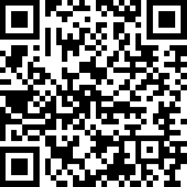
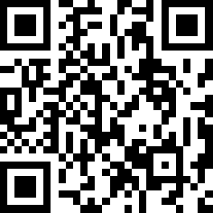
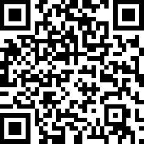
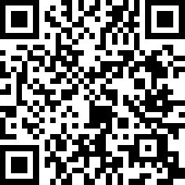

Guía de estilos
¿Alguna vez te has dado cuenta de que puedes reconocer que estás en WhatsApp solo por
ese tono de verde específico, o que sabes que es Netflix por el contraste perfecto
entre su fondo negro y su letra roja? Eso no es magia, ni es coincidencia: es diseño
estratégico.
En el mundo real, detrás de cada app o página web exitosa hay un documento sagrado llamado
Guía de Estilo. Imagínalo como el "ADN" o la "personalidad" de un producto digital
Esta semana dejaremos de ser simples consumidores de apps para convertirnos en los creadores de sus reglas visuales. ¿Listos para darle personalidad a sus ideas?
Objetivos de aprendizaje
- 📚 Comprender qué es una guía de estilo y por qué es fundamental en el mundo laboral del desarrollo de software y diseño.
- 🎨 Seleccionar colores estratégicos aplicando psicología del color y reglas de contraste.
- ✍️ Estructurar textos usando jerarquías tipográficas para guiar la lectura del usuario.
- ✨ Diseñar una Mini Guía de Estilo coherente y profesional para un caso de estudio real.
Guía de Estilo y UI/UX
¿Qué es una guía de estilo?
Una guía de estilo es un documento visual que recopila todas las reglas de diseño de un producto digital. Es el "manual de instrucciones" que le dice a cualquier diseñador o programador: "Aquí usamos esta fuente, este tamaño de letra, este color exacto y este tipo de iconos".
Definición Técnica
Haz clic para ver "En palabras simples"
Una guía de estilo evita que cada pantalla parezca hecha por una persona diferente.
Ejemplo del mundo real
Empresas como Uber o Airbnb tienen guías de estilo públicas en internet. Si un programador nuevo entra a trabajar a Spotify mañana, no se pone a adivinar qué verde usar; va a la guía de estilo, copia el código del color y listo. Todo se mantiene uniforme.
Actividades prácticas
Actividad 1: Enlaza los elementos de una guía de estilo con su descripción
Haz clic en un elemento y luego en su descripción correcta para crear una línea de conexión.
Elementos:
🎨 Paleta de colores
✍️ Tipografía
🔷 Iconografía
📐 Espaciado
Descripciones:
a) Define el estilo visual de los símbolos usados en la interfaz; deben ser consistentes entre sí.
b) Establece los colores primario, secundario y de acento aplicando la regla 60-30-10.
c) Determina las fuentes, tamaños y pesos que crean jerarquía visual en la pantalla.
d) Define los márgenes y separaciones entre elementos para dar orden y respiración al diseño.
Actividad 2: Arrastra y completa las oraciones
Arrastra cada concepto hacia el espacio vacío correspondiente para completar las oraciones sobre guías de estilo.
Completa las siguientes oraciones:
Una es el documento que reúne todas las reglas visuales de un producto digital para garantizar uniformidad.
La regla indica que el color dominante abarca el 60%, el secundario el 30% y el de acento el 10%.
En pantallas se prefieren las fuentes porque son más limpias y legibles en píxeles.
Si el usuario debe pensar qué significa un , el diseño ha fallado en comunicar su función claramente.
Palabras disponibles:
Evaluación. Preguntas de selección múltiple (marca la respuesta correcta)
Selecciona la respuesta correcta para cada pregunta sobre grupos, equipos y trabajo colaborativo.
Recursos para profundizar
Para profundizar en el mundo del diseño UI/UX y las guías de estilo, te recomendamos explorar las siguientes herramientas y recursos:
-
El estándar actual de la industria para diseño UI/UX (Figma)
Ir al recurso
-
Generador automático de paletas de color
Ir al recurso
-
Cientos de tipografías gratuitas para descargar y probar
Ir al recurso
-
Librería de iconos limpia, moderna y muy usada en la industria
Ir al recurso
Bibliografía
Un clásico, lectura obligatoria en UI/UX.
Recurso oficial de Apple para diseño de interfaces coherentes.
Manual oficial de diseño de Google (Material 3).